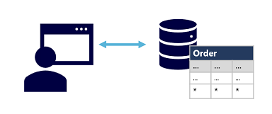

01. Principais Conceitos de Dados
Link para o curso: MS Learn - Principais Conceitos de Dados
Categoria: MS Azure
Formatos de dados
Dados Estruturados
- dados estruturados obedecem a um esquema fixo, portanto, todos os dados têm os mesmos campos ou propriedades;
- o esquema para entidades de dados estruturados é tabular. Em outras palavras, os dados são representados em uma ou mais tabelas que consistem em linhas para representar cada instância de uma entidade de dados e colunas para representar os atributos da entidade;
Dados Semiestruturados
- dados semiestruturados são informações que têm alguma estrutura, mas que permitem alguma variação entre instâncias da entidade;
- um formato comum para dados semiestruturados é o JSON (JavaScript Object Notation);
Dados não Estruturados
- documentos, imagens, dados de áudio e vídeo e arquivos binários que podem não ter uma estrutura específica;
Armazenamento de Arquivos
Arquivos de texto delimitado
- o formato mais comum para dados delimitados é CSV (valores separados por vírgula) nos quais os campos são separados por vírgulas e as linhas terminam com um retorno de carro/nova linha;
- o texto delimitado é uma boa opção para dados estruturados que precisam ser acessados por uma ampla variedade de aplicativos e serviços em um formato legível;
JSON (JavaScript Object Notation)
- JSON é um formato onipresente no qual um esquema de documento hierárquico é usado para definir entidades de dados (objetos) que têm vários atributos;
- Cada atributo pode ser um objeto (ou uma coleção de objetos), tornando o JSON um formato flexível que é bom para dados estruturados e semiestruturados;
Linguagem XML
- o XML sido amplamente substituído pelo formato JSON que é menos detalhado, mas ainda há alguns sistemas que usam XML para representar dados;
- usa marcas delimitadas por colchetes angulares (../) para definir elementos e atributos;
BLOB (objeto binário grande)
- os tipos comuns de dados armazenados como binários incluem imagens, vídeo, áudio e documentos específicos de aplicativo;
- ao trabalhar com esses dados, os profissionais de dados geralmente se referem aos arquivos de dados como BLOBs (objetos binários grandes);
Formatos de arquivo otimizados
- alguns formatos de arquivo especializados que permitem a compactação, a indexação e o armazenamento e o processamento eficientes foram desenvolvidos;
- alguns formatos comuns de arquivo otimizados que você verá incluem Avro, ORC e Parquet;
Bancos de dados
Bancos de Dados Relacionais
- bancos de dados relacionais são comumente usados para armazenar e consultar dados estruturados;
- os dados são armazenados em tabelas que representam entidades, como clientes, produtos ou pedidos de venda;
- cada instância de uma entidade recebe uma chave primária que a identifica de maneira exclusiva;
- normalização de dados: eliminação de valores de dados duplicados através do uso de chaves primárias e secundárias para referenciar entidades de dados entre tabelas;
Bancos de Dados não Relacionais
- os bancos de dados não relacionais geralmente são chamados de banco de dados NoSQL;
- há quatro tipos comuns de banco de dados não relacionais normalmente em uso:
- Bancos de dados de chave-valor nos quais cada registro consiste em uma chave exclusiva e um valor associado, que pode estar em qualquer formato;
- Bancos de dados de documentos, que são uma forma específica de banco de dados de chave-valor na qual o valor é um documento JSON (em que o sistema é otimizado para análise e consulta);
- Bancos de dados de família de colunas que podem armazenar dados tabulares que abrangem linhas e colunas; você também pode dividir as colunas em grupos conhecidos como famílias de colunas. Cada família de colunas contém um conjunto de colunas que estão logicamente relacionadas;
- Bancos de dados de grafo, que armazenam entidades como nós com links para definir relações entre eles;
Processamento de dados
Processamento de Dados Transacionais
- um sistema transacional registra transações que encapsulam eventos específicos que a organização deseja controlar;
- os sistemas transacionais geralmente são de alto volume, às vezes manipulando muitos milhões de transações em um dia. Os dados que estão sendo processados têm que estar acessíveis com rapidez;
- o trabalho executado por sistemas transacionais é geralmente conhecido como OLTP (Processamento de Transações Online);
- as soluções OLTP dependem de um sistema de banco de dados no qual o armazenamento de dados é otimizado para operações de leitura e gravação para dar suporte a cargas de trabalho transacionais nas quais os registros de dados são criados, recuperados, atualizados e excluídos (essas operações são geralmente chamadas de CRUD);
- os sistemas OLTP impõem transações compatíveis com a semântica conhecida como ACID:
- Atomicidade: cada transação é tratada como uma única unidade, que é totalmente bem-sucedida ou que falha completamente;
- Consistência: as transações só podem conduzir os dados do banco de dados de um estado válido para outro estado válido;
- Isolamento: as transações simultâneas não podem interferir entre si e devem resultar em um estado consistente do banco de dados;
- Durabilidade: quando uma transação tiver sido confirmada, ela permanecerá confirmada;

Processamento de Dados Analíticos
- o processamento de dados analíticos normalmente usa sistemas somente leitura (ou read-mostly) que armazenam grandes volumes de dados históricos ou métricas de negócios;
- os detalhes específicos de um sistema de processamento analítico podem variar entre as soluções, mas uma arquitetura comum de análise de escala empresarial tem esta aparência:
- Os arquivos de dados podem ser armazenados em um data lake central para análise;
- Um processo de ETL (extração, transformação e carregamento) copia dados de arquivos e bancos de dados OLTP para um data warehouse otimizado para atividade de leitura;
- Os dados no data warehouse podem ser agregados e carregados em um modelo OLAP (processamento analítico online) ou cubo;
- Os dados no data lake, no data warehouse e no modelo analítico podem ser consultados para produzir relatórios, visualizações e painéis;

- os data lakes são comuns em cenários de processamento analítico de dados modernos, em que um grande volume de dados baseados em arquivo deve ser coletado e analisado;
- os data warehouses são uma forma estabelecida de armazenar dados em um esquema relacional otimizado para operações de leitura – principalmente consultas para dar suporte a relatórios e à visualização de dados;
- um modelo OLAP é um tipo agregado de armazenamento de dados que é otimizado para cargas de trabalho analíticas. As agregações de dados são feitas entre dimensões em diferentes níveis;